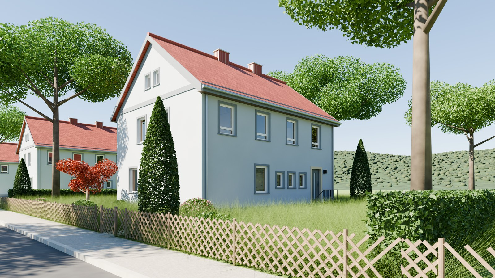
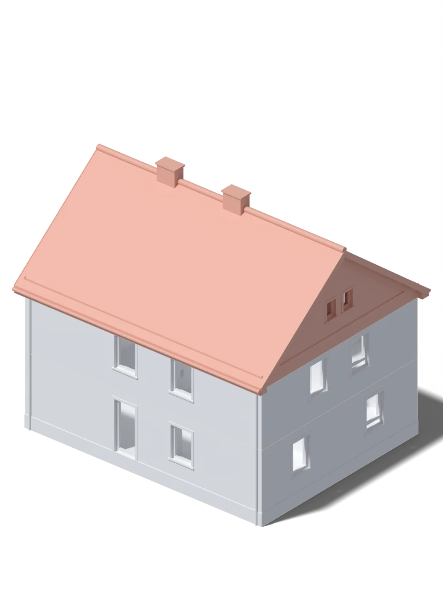

3D-Modell · Version 0.9.2
Hausmodell
Ein Einfamilienhaus aus der Zeit um 1950, in Blender nachgebaut. Dazu gibt es Druckdaten für ein stapelbares Modell: Dach und Obergeschoss lassen sich abheben.

3D-Druck

Aufbau
Drei Teile, aufeinander gesteckt
Hebt man Dach und Obergeschoss ab, liegt darunter jeweils der Grundriss des Geschosses – mit Wänden, Türen und Treppe.
- Dachinnen hohl, mit Querstegen · 81 mm hoch
- Obergeschossvier Zimmer und Bodentreppe · 48 mm hoch
- Erdgeschossauf hohlem Sockel · 60 mm hoch
Maße im Maßstab 1:60. Stifte an den Ecken halten die Teile in Position.
- 1:60Maßstab
- 3 Teileca. 18 cm hoch
- ca. 27 hDruckzeit
- ca. 820 gPLA
| Teil | Druckzeit | PLA | Filament |
|---|---|---|---|
| Erdgeschoss | 8 h 55 min | 294 g | 97 m |
| Obergeschoss | 9 h 01 min | 277 g | 91 m |
| Dach | 9 h 13 min | 246 g | 81 m |
| Alle drei Teile zusammen | 27 h 09 min | 817 g | 270 m |
Werte aus Bambu Studio für Bambu PLA Basic mit 0,4-mm-Düse.
Die Projektdatei für Bambu Studio enthält alle drei Teile auf je einer Druckplatte, eingestellt für den Bambu Lab P1S und fertig gesliced.
Haus_M1-60_P1S_Projekt.3mf · 24 MB · STL-Dateien · Druckanleitung (PDF)
Kleinere Variante 1:90
Dasselbe Modell, um ein Drittel verkleinert. Wände und Böden sind für den kleineren Maßstab verstärkt (überall mindestens 1,2 mm), Stifte Ø 2,6 mm sitzen in Löchern Ø 3,0 mm. Die Innenmaße sind dadurch etwas kleiner als im Maßstab.
- 1:90Maßstab
- 3 Teileca. 13 cm hoch
- ca. 17 hDruckzeit
- ca. 390 gPLA
| Teil | Druckzeit | PLA | Filament |
|---|---|---|---|
| Erdgeschoss | 6 h 11 min | 147 g | 48 m |
| Obergeschoss | 5 h 24 min | 124 g | 41 m |
| Dach | 5 h 19 min | 120 g | 40 m |
| Alle drei Teile zusammen | 16 h 54 min | 391 g | 129 m |
Werte aus Bambu Studio für Bambu PLA Basic mit 0,4-mm-Düse.
Die Projektdatei für Bambu Studio enthält alle drei Teile auf je einer Druckplatte, eingestellt für den Bambu Lab P1S und fertig gesliced.
Haus_M1-90_P1S_Projekt.3mf · 26 MB · STL-Dateien · Druckanleitung (PDF)
Leichter gedruckt
Die erste Fassung brauchte rund 985 g PLA und 30 Stunden. Zwei Änderungen am Modell haben das auf etwa 820 g und 27,5 Stunden gesenkt, ohne dass sich das Haus von außen verändert hat.
| Maßnahme | vorher | nachher |
|---|---|---|
| Dach hohl statt massiv. Die Dachhaut ist innen auf 2 mm ausgedünnt; drei Querstege und ein Steg unter dem First halten sie stabil. | 376 g | 250 g |
| Sockel im Erdgeschoss hohl. Statt einer massiven Platte von 10 mm trägt ein Raster aus Stegen eine dünne Bodenplatte von 1,2 mm. | 343 g | 294 g |
| Alle drei Teile zusammen | ca. 985 g | ca. 820 g |
Damit der Slicer den hohlen Sockel nicht wieder auffüllt, sind die Stützen beim Erdgeschoss ausgeschaltet.
Die Druckdaten wurden mit Hilfe des Sprachmodells (LLM) Claude erzeugt und Schritt für Schritt verbessert. Die Gewichte und Zeiten sind Werte aus dem Slicer.
Blender-Dateien
Die Blender-Dateien liegen im Release auf GitHub: das Haus mit Umgebung, ohne Umgebung sowie Erdgeschoss und Obergeschoss einzeln. Sie wurden mit Blender 5.2.2 LTS erstellt.
Drohnenflug ums und durchs Haus
Mehr dazu
Aufbau des Modells, Maße, Farben und Druckeinstellungen stehen in der Dokumentation. Alle Dateien finden sich im Repository auf GitHub.